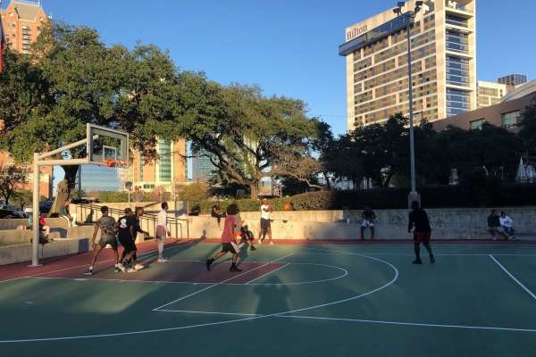

Grunnleggende regler for Streetbasket-spillet
Grunnleggende regler for Streetbasket-spillet
 Pickup Basketball-trening og fordeler
Pickup Basketball-trening og fordeler
 Hva er pickup i Streetbasketball?
Hva er pickup i Streetbasketball?
Hva er Gate basketball? Hvilken tid er når folk og basket utøvere kommer for å spille på ball parkene utendørs med andre i uken?
Ute sesongen i utendørs parker rundt byen starter fra våren og varer igjennom sommeren til høsten er årstiden ute. Å møte opp til pickup basketball er åpent for alle som ønsker å prøve å spille ball på offentlige baner og populære ball parker i Oslo og rundt byen (åpent fra morgen kl. 9 til kveld 22:00) som er møteplasser utendørs.
Streetbasket er en uformell variant og en gateversjon av basketballsporten, som vanligvis kan spilles utendørs på asfalt, i parker, på lekeplasser eller på en halv basketballbane innendørs mm. Det spilles vanligvis på en kurv, men ellers ligner streetball på vanlig basketball. Antall spillere på hvert lag kan variere fra individuell og solospill til 4-5 spillere. Det mindre baneområdet gir mindre rom ofte på korte distanser. Det mindre antallet spillere åpner for nærkamp, teknikk, raske ferdigheter, show og triksing, for eksempel dribling og dunking.
Vanligvis spilt på utendørs baner uformelt og med mindre fokus på struktur og regler. Er kjent for å la spillere vise frem sine egne individuelle ferdigheter. Streetbasket er idretten som foregår i bakgårder, i skolegården, i parker og foran garasjen. Rett og slett alle steder du kan henge opp en kurv. Å spille basketball på amatørnivå krever lite utstyr, kun en ball og en kurv. Det handler om utendørs baner som sosiale møteplasser i byen. Sporten og kulturen rundt b.la. gatekunsten har siden 1980-tallet vokst seg å bli populær i både klesstil mote, musikk, film, TV og annen populærkultur.
I USA kalles streetbasketball ofte rett og slett for streetball. Spillet er relativt nytt i Norge. Tidligere var det et storbyfenomen, som var utbredt i USA. Streetbasket var et typisk utrykk for en ung og urban livsstil i de største amerikanske byene. Streetbasket har utviklet seg til en selvstendig sport etter hvert, med egne regler og en fairplay-kultur. Dette har gjort spillet populært blant alle aldersgrupper, kjønn og samfunnslag. Men selv om spillet er blitt en egen sport og noen spiller seriøse turneringer er nok streetbasket noe som forsatt er mest utbredt som en lek med venner på åpne plasser og løkker med en basketballkurv. Streetbasket spilles med bare en kurv. Du trenger derfor ikke så stor plass, eller så mange spillere. Noen spiller med to spillere på hvert lag, andre med tre. Ellers er regelene ganske like dem i vanlig basket.

Grunnleggende regler for Streetbasket-spillet
Fouls
Reglene for streetball varierer mye fra bane til bane. Regler for hvilke spill som er lovlige og ulovlige avgjøres av ordet en feil (eng: en foul i basketball).
I gate basketball betyr «feil» et regelbrudd, ofte en ulovlig fysisk kontakt eller usportslig oppførsel. Personlige feil blir dømt for ulovlig kontakt eller usportslig kontakt.
Personlige feil (eng: foul) i pickup oppstår ved urettmessig fysisk kontakt med en motspiller. Eks. ved hard fysisk kontakt som å dytte med armer eller holde, slå, eller rive i en motspiller, og overdreven kroppskontakt kan regnes også som en feil.

Street basketball spilles vanligvis med kun én kurv og på en halv bane, der to lag med 2-3 elelr 4 spillere konkurrerer. Poeng kan tildeles for skudd innenfor eller utenfor en trepoengslinje, avhengig av reglene. Etter en scoring må det angripende laget rulle ballen inn på banen fra utenfor trepoengslinjen, og det er ingen dommer eller poengteller involvert i det hele tatt. Kampen kan vinnes ved å nå en viss poengsum (f.eks. 7, 11 eller 21) eller ved å lede etter en bestemt tidsperiode.
Pickup kamper foregår uten noe dommere helt uformelt, så alle spillere på begge lag følger vanligvis regelen om å «dømme sin egen feil». Når en spiller mener det har skjedd en feil på motstander laget for eks. en takling, trenger spillere rope «Feil!» i nøyaktig øyeblikk, spillet vil bli stoppet, og ballen tildeles den felte spillerens lag på oversiden i midten av banen (straffekast etter feil tildeles vanligvis ikke i streetball, som i vanlig basketball som er organisert innendørs).

Halvbane:
Vanligvis spilles street basket med 2 mot 2 eller 3 mot 3, med én kurv og en halv bane.
Start av spillet:
Kampen starter med at det angripende laget sjekker ballen under kurven, men det ikke-scorende laget kan ikke forsvare innenfor den avgrensede halvsirkelen.
Poeng for mål scoring er at et skudd innenfor trepoengslinjen gir 1 poeng, mens et skudd fra utsiden gir 2 poeng.
Når et lag blir feilet, får det ikke-scorende laget eller vinner-laget som scoret ballen utenfor trepoengslinjen ved toppunktet.
Struktur på kamper med noen regler i gatebasket
Kun på en bane eller en kurv.
For at det forsvarende laget skal begynne å angripe, må laget ha kontroll på ballen utenfor trepoengslinjen.
På mål får laget 1 poeng, eller, hvis skuddet tas utenfor trepoengslinjen, 2 poeng.
Etter et mål beholder det scorende laget ballen.

Regler for tekniske ferdigheter er de samme som i vanlig basketball, dvs. regler som handler om kontroll av ballen og bevegelsene dine, mens reglene spesifiserer hva du ikke kan gjøre, for eksempel dobbelstuss, eller ta for mange steg uten å drible. Viktige tekniske ferdigheter inkluderer dribling, pasninger, skudd og evnen til å endre retning, mens reglene forhindrer ulovlige handlinger som for eksempel dobbel dribling.


Det er viktig for spillere å utvikle et fundamentalt godt skudd. Og jo før en spiller kan utvikle dette, desto bedre.
Det er mye raskere og enklere for spillere å forbedre seg når de bruker en riktig skyteteknikk.
Skuddforberedelse. Håndplassering på ballen. Balansert base. Føttenes retning (vendingen). Konsekvent skuddlomme. Øynene på mål. Rynke håndleddet. Albuen under basketballen. Balansehånden. Rytmeskudd + gjennomføring. For en mer grundig titt på hvert av trinnene i videoen nedenfor om hvordan du skyter en basketball (eksempel).

Bortsett fra å skyte, er de beste spillerne i stand til å utføre alle ballferdigheter like bra med begge hender.
De kan sentre med venstre og høyre.
De kan blokkere med venstre og høyre.
De kan drible med venstre og høyre.
De kan avslutte med venstre og høyre.
Mange unge spillere dominerer spillet med sin foretrukne hånd i ung alder. Mange er så dominante at de ikke engang gidder å jobbe med den andre, svakere hånden. Og her er hva som skjer: Når de kommer til neste nivå, blir forsvaret smartere. Du vil ofte høre en trener rope ut å «tvinge ham til venstre», noe som effektivt kan stenge ned spilleren fordi de ikke har driblingsferdighetene med venstre hånd til å angripe i den retningen. Det er viktig å jobbe med begge hender slik at spillere kan dra nytte av alt forsvaret gir dem.

Pickup basketball med dager med spilling med andre likesinnede utøvere i lokale ball parker eller by parker handler om å «være i aktivitet med sport». Spillet er alltid populært med ball spillere og ball parkene er enkelt tilgjengelige med lange åpningstider for drop inn som et lavterksel idretts og treningstilbud. Man kan bare pulle opp når man vil i sin timeplan som etter jobb arbeidstid, studietid eller skoletid. Streetbasket og byspilling er selve hjertet av å drive med basketball sporten på fritiden, enten kun sosialt for gøy, spille som en hobby eller med mål om å konkurrere kamper, og spille i turneringer talentfullt på høyt nivå.
Pickup kan hjelpe basket spillere med sin utvikling. Pickup basketball er effektivt og nødvendig for å utvikle seg som spiller. Fysisk og mentalt. Fysisk må en spiller vite hvor de ligger sammenlignet med jevnaldrende utøvere og med erfarene spillere som er eldre, sterkere og bedre enn dem. Park baner, den lokale hallen eller treningssentere er det beste stedet å kunne oppnå å bli en bedre spiller. Når en flinkere og seriøs spiller bruker mye tid på å trene i treningsrom eller med styrke og vekt-trening, putte inn skudd eller øve med ferdighetene sine, er en pick-up-kamp et trygt sted og trygg måte å vise frem sine nye moves (eng) og sine skills (eng). Pickup parker er et perfekt stedet å vise frem hva du kan med innsats og hva du har arbeidet med.
For hvem bryr seg om man roter spillet sitt litt til og gjør feil i kamper? Det er ingen trener til stedet som skal veilede eller kjefte på spillere etter at man har rotet i ball spillet sitt eller noe sånt. Mentaliteten er avslappet da det bare er deg og kurven som er utfordringen som er fokuset. Med en gjeng andre basketballspillere som spiller sånn som de vil, alle gjør sine ting og sitt beste.
Pickup basket hjelper til med utholdenhet
Pickup er også en fin måte å holde seg i form på. Enten det er i løpet av den organiserte basket sesongen eller ute på sommeren, når man er i aktivitet og løper litt rundt, opp og ned, er spillet en utmerket kilde til mosjon. Når det gjelder det mentale aspektet av spillet, har pickup mye å tilby. En pick-up-kamp er et sted hvor en spiller enkelt kan bygge selvtillit. Det spilles ofte ikke kjempe mye og sterkt forsvar, så det er enklere å score. Ingenting bygger en spillers selvtillit mer enn å se ballen gå gjennom kurven. Det spiller ingen rolle hvem du scorer mot heller. I tillegg som sagt, får unge spillere ofte sjansen til å spille mot eldre spillere, og suksess der kan bidra mye til en spillers utvikling og selvtillit. I tillegg har eldre spillere mere erfaring, ferdigheter og triksene som mange unge spillere kan lære av.
Pickup øker moroen som et viktig punkt.

Pick-up er et sted hvor spillet og sporten forblir uskyldig uten noe stress eller press for å prestere. En park bane er et hellig sted. Det er noe ekte å lære fra med pick-up over tid eller flere år. Eller en hel dag med pickup for den saks skyld. Å bare dra ut dit for turer i frisk luft med en vennegjeng og konkurrere er alltid gøy og chill. Det trenger ikke engang å være 5 mot 5 på helbane, du trenger bare en ball og en kurv. Det kan være 4 mot 4 eller helt ned til 1 mot 1. Det kan være en skyteleker som heter 21. Det kan til og med være en spill lek som heter Hest (eng: Horse). Det spiller ingen rolle. Vil alltid forbli gøy.

Pickup basketball har sine problemer med uenigheter som kan oppstå og kjennetegn av spillet også, men jeg tror det finnes ekte livsleksjoner som kan læres ved å håndtere spillet uten å ha dommere rundt for å «avgjøre» alle reglene og alle dømminger av feil. Prøv å jobbe hardt og implementere nye ferdigheter mens man spiller idretten. I disse dager handler det organiserte basket spillet og basketball sporten mye om penger, politikk og press på barn til å prestere. Det gode med pickup basket er at ingen av disse tingene betyr noe. Det eneste som betyr noe på basketballbanen den aktuelle dagen er om du kan spille ute på banen, har dyktighet (eng: skills) og innsats, eller ikke. Husk å prøve å introdusere de nye ferdighetene dine på pickup-banen, deretter øve alene og i kamper, og deretter inn i ferdighetsspillet i håndtverket ditt.

Hva er en pickup-kamp? En pickup-basketballkamp er rett og slett en gruppe spillere som dukker opp på hallen eller i en utendørs gatepark og grupperer seg for en pickup kamp mellom fritidsspillere som leter etter folk og spille med og mot. En improvisert kamp med venner og fremmede i en basket park eller bakgårdspark. Noen ganger kjenner ikke spillerne engang hverandre, men har et felles ønske om bare å spille en konkurransedyktig basketballkamp på farten helt tilfeldig. Kampen er ikke en organisert liga eller en del av noen organisert gruppe.. bare spillere som ønsker å spille og bli med på litt konkurranse med noen andre likesinnede idrettsutøvere. De fleste av oss er enige om at pickup basketball omtrent er så bra som det kan bli.

Pickup i utendørs sesongen forbedrer spillet. Alle basketball driller og ball øvelsene i verden kan ikke erstatte den virkelige tingen og prøve seg i kamp og spille mot folk. Og selv om pickup-basket ikke er det samme som organisert basketball, kan de riktige spillene fortsatt bidra mye til å finpusse ferdighetene dine. Unge og yngre utøvere kan dra nytte av pickup på følgende måter: Få inn repetisjonene sine - skyting, dribling, pasninger, og den fundamentale og grunnleggende forståelsen av basketball IQ krever dedikasjon og repetisjon for å mestre. Ute pickup er en flott mulighet til å få inn repetisjoner uten noe tidsbegrensning eller andre faktorer. Å få erfaring mot varierte motstandere – unge idrettsutøvere møter stort sett bare konkurranse innenfor samme aldersgruppe og generelle ferdighetsnivåer. Noen ganger kan det være en fordel å spille mot større, sterkere og mer talentfulle spillere i det lange løp. Å holde seg i form – selv de mest avslappede pickup kampene gir god trening. Å holde en ball spiller sin kardio utholdenhet, styrke og fleksibilitet på et høyt nivå året rundt er enklere enn å bygge cardio opp igjen hver høst til start på den organiserte basket sesongen i haller.

Bruk pickup for å bygge gode vaner. Som foreldre og idrettstrenere burde fortelle unge spillere at pcikup er en mulighet til å bli bedre ved å bygge gode vaner er en viktig innstilling. Det er mulig å ha det gøy og øve på de riktige grunnleggende ferdighetene samtidig. Faktisk, er det mange som er typen spillere som er uendelig fokusert på konkurranse også. Mange yngre spillere er raske til å gi pasninger og nøler med å skyte. En annen type spillere trives på utsiden og vil ta langdistanse skudd uten å drive til kurven. Pickup gir gode muligheter til å bygge selvtillit hos yngre og unge idrettsutøvere også.


Sommer basketball gir en frihet og en morro faktor som lar mange ballspillere komme ut av sonen sin og ha det gøy uten å være stresset eller redd for å feile. Noen spillere kan også trenge å jobbe med noe spesifikt for å forbedre spillet sitt. Hvis en spiller for eksempel er en god scorer, men mangler evnen til å skape rom eller bevegelse uten ball, kan han eller hun bruke pickup som en arena med blanke ark. Denne utøveren kan prøve å drive og kutte, gjøre stuss pasninger og andre teknikker de kanskje aldri har prøvd før uten risiko for konsekvenser i bakhodet.

Hvordan velge riktig pickup kamp eller bane for deg. Så hvor bør unge utøvere spille? Mange barn vil ha en nabolagsbane nede i gaten eller noen kvartaler unna. Likevel er kanskje ikke dette den beste muligheten for unge som er interessert i å forbedre seg som spillere. Unge basketballspillere og foreldrene deres bør vurdere følgende: Trygghet. Spillnivå - for en dyktig basketballspiller kan det være en utfordring å finne konkurranse. Se deg rundt i området og ring noen lagkamerater om nødvendig. Spillernes alder - som vi berørte tidligere, kan det noen ganger være bra å spille mot de eldre barna. Andre ganger kan det være en ulempe. En fysisk mismatch eller ubalansert fysisk kamp mellom svakere og sterkere spillere kan føre til slurvete spill og potensielt til og med skader. Morofaktor – når alt kommer til alt, bør man ha det gøy med å spille basketball om sommeren. Om man bare vil være i litt aktivitet uten å ville konkurrere i det hele tatt. Da kan det å spille med venner være veien å gå. Hvis en yngre utøver spiller basketball med den riktig holdningen og motivasjonen, vil spillere utvikle seg sportslig på sikt og bli bedre. Kampen er kun mot seg selv med ballen og kurven som sin viktige motstander. Øvelse gjør mester.

Streetball (eng) er lidenskap. Selv om spillet ikke alltid ser like vakkert ut, kan man lett kalle det for gate kunst. Det er en tøff sport for tøffe utøvere som ikke tillater mye svakhet. Streetball handler om konkurranse også, å spille for å vinne og noen ganger til og med ydmykelse av motstandere. Det handler imidlertid også om vennskap fordi det er én grunnleggende ingrediens som forbinder alle spillere: kjærligheten til spillet og en felles lidenskap for sporten basketball.
Uten dommer er spillets flyt fullstendig avhengig av respekt og kommunikasjon mellom spillerne. Det er vanligvis etablerte, forskjellige regler på hver bane der spektakulære triks teller mer enn å nøyaktig følge basketballreglene.
Streetball er en sport som involverer alle deler av kroppen din, til og med munnen: Hvis du mestrer konkurranse snakk (eng: trashtalk) og kan backe det opp ved å bevise at du har et godt spill, med scoringer, dribling, triksing, dunking og gode bevegelser med ball, mestrer du banen. Å distrahere motparten, show, triksing og underholde publikum er like viktig som selve pickup pillet. Disse forskjellige aspektene og trekkene har gjort street basketball (eng: streetball) til å handle om et attraktivt show som spillet går ut på til den dagen i dag.
Fra starten på 70-tallet i de store byene i USA og frem til i dag har ikke reglene endret seg mye, men det har fått stadig større innflytelse i gatekulturer rundt om i verden. Med røtter i den berømte Rucker Park i New York City, tok streetball steget til andre baner og byer der det ikke var nok for unge spillere å spille på klubb laget sitt, på skolelag og idrettslag.
Det at man ikke hadde mange muligheter til å bruke fritiden sin på, var den eneste sjansen til å etterligne sine store idoler fra de profesjonelle basketligaene ABA og senere ble til NBA. Kampene tiltrakk seg raskt et stabilt publikum som feiret de ustoppelige triksene, scoringsbevegelsene, de spektakulære, tekniske fintene og finesse driblinger til profesjonelle stjernespillere.
Disse proffe spillerne ble lokale legender og fikk kallenavn i lokalsamfunnet som «The Destroyer», «Helikopter» eller «Pee Wee». Selv den berømte Julius «Dr. J» Erving viste talentene sine i Rucker Park-turneringen i 1971. Butch Purcell, som holdt oversikt over statistikken på Rucker Park, sa om ham: «Mann, mann! Han dunket folk som gale. Den gangen ble kampene bare holdt i helgene, så den neste uken spredte ordet seg som ild i tørt gress over byen. Da vi dukket opp den neste uken for å spille spillet vårt, var parken så fullpakket at folk ikke kunne komme inn.» Etter å ha spilt i tre år på laget til University of Massachusetts og oppnådd fantastiske resultater der, var han ikke helt kjent blant publikum på den historisk kjente banen Rucker Park.
Likevel hevdet Ernie Morris, et vitne til det legendariske møtet mellom Julius Erving og Joe Hammond, ivrig: «Jeg har sett så mye flott basketball i den parken, men jeg har aldri sett noe lignende siden.» Dermed la legendene rundt «Doc» grunnlaget for den uforlignelige suksessen til streetball sporten.
I de påfølgende tiårene ble spillet av street basket også anerkjent av de dominerende basketballmerkene som Nike, og det fikk til og med merker som Kickz og AND1 til å bygge sin identitet på denne spesifikke stilformen av basketball. Denne økende interessen og popularitet for street basketball ble ytterligere fremmet da Allen Iverson gjorde det mulig for en begavet, super-talentfull streetbasketball spiller og legende fra Philly å lykkes i proff liga NBA.
Han var elsket av hele generasjonen av unge streetballspillere og etablerte gatebasketball stilen av spillet i NBA. Iversons popularitet gjorde det mulig for Reebok, å reklamere for streetbasket kulturen. Selv i dag, i det kommersialiserte og digitaliserte miljøet i NBA, nøler ikke de største stjernene som Kevin Durant eller Kyrie Irving med å komme ut og demonstrere sine ferdigheter på banen.
Imidlertid spilles denne stilen av basketball fortsatt i sin tradisjonelle form over hele verden til i dag, og hovedkomponenten er: Når du tør å spille gate basketball (eng: streetball), styrker det troverdigheten din.. selv om du taper, vinner du respekten til alle på banen.
Close (X)
Street basketball forener, handler om seier og konkurranse, tøffhet, om lag samarbeid, en sunn livsstil, triksing og show.
Spillet og sporten spilles av ekte vinnere og mestere i livet som ikke gjør det for pengene og som ikke klager over hver eneste takling og feil.
Close (X)
Uansett hvordan du ser ut eller hvem du er, hvis du kan vise at du kan spille, vil du få respekt. Streetball (eng) stammer fra Amerika på 50-tallet og ble populært fordi du kunne spille det hvor som helst, når som helst, og det var gratis. Det spredte seg over hele verden og ble popularisert over hele Amerika ved å tiltrekke seg mediedekning. En enkel ting du kan gjøre for å fortjene andres respekt på basketballbanen, er at hvis du spiller rent, vil andre like å spille med deg. Bare lær deg reglene og spill rent. For å fortjene respekt på banen må du bevise for de andre spillerne at du fortjener den respekten.
Hvis du spiller med konkurranseinnstilte folk som vil vinne og gir opp eller ikke prøver med svak innsats, vil man ikke ha deg på laget sitt neste kamp. Det fungerer også omvendt; hvis du viser dem at du er god nok til å fortsette å spille, vil de respektere deg mer. La spillet ditt tale for seg selv. Gå hardt inn i hvert eneste spill. La alt snakke for seg selv der ute på banen. Hjelp opp det andre laget når de faller, men ikke vær redd for å kjøre over dem forbi i kamper. Spill rent, rettferdig og hardt. Du trenger ikke å være best, men innsatsen din og din innsatsvilje vil si mye for medspillerne din, lagkameratene dine og motstanderne dine.
I streetball (eng) er det oftest tekniske, raske og individuelle ferdigheter som kommer best ut. Den store rollen spilles av de tekniske ferdighetene til hver enkelt spiller som er et viktig fokus i sporten. Lokale turneringer og arrangementer arrangeres også noen ganger om sommeren i utesesongen på bybaner eller i parker. Arrangerte events og turneringer er et svært flott initativ fordi med arrangementer gir man spillere også en mulighet til å vise frem ferdighetene sine utenfor de tradisjonelle kanalene av basket sporten. I street basket settes alle spillere ute på banen med like muligheter på rettferdig vis. Streetball (eng) handler om å utvikle seg som idrettsutøver. Dette spillet er en kjempe fin arena i spillets utvikling, og hvis du ser på verdensklasse liga NBA nå, selv om det definitivt ikke er streetball på gata, er det mange elementer, likheter og bevegelser av streetbasketball som har blitt kombinert sammen med fundamentale elementer og grunnleggende ferdigheter av basketball sporten også.
Basketball ute på parker er et spill fra gata ofte med gatekultur i bakgrunnen, som inkludert med rap musikk og hip hop. Det er en av de sjeldne sportene alle kan spille – alt du trenger er en kurv og ballen. Streetball (eng) handler om stil, show, triksing, en fri spillstil uten strenge og med færre regler, der fysisk spill og utholdenhet er avgjørene. I motsetning til tradisjonell basketball er streetball selvstyrt, noe som betyr at spillerne dømmer sine feil og regelbrudd. Hvis noen dømmer feil, må du respektere det som spiller. Men du vet, når det kommer noen myke spillere som begynner å dømme svake feil eller som ikke kan basketball regler og er usikre, da aksepterer motspillerne det og gir dem ballen tilbake som oftest, men motspiller lar dem få vite at de er uenig hvis det er for fysisk svakt (eng: soft) og dømme feilen i kamp situasjonen.
Motstanderne du spiller mot vil ikke gi deg som motstander noe enkelt i forsvar og angrep. Mange erfarne spillere som vil konkurrere kommer fra en tøff mentalitet. Hvis du skal vinne over oss og slå oss i kampen, må du fortjene det. Streetball (eng) spilles for det meste med to lag på tre på en halv bane med en kurv. Det er den ekte gate basketballen, og den morsomste å spille. Hvem som helst kan møte opp og spille. Du kan bare komme enten som et lag eller individuelt – og gå ut i parken eller på gatebanen.
Mye av fokuset handler om å se bra ut og gi et show i spillet sitt. De to typene streetbasket spillere er: Det er de som vil se bra ut, gjøre triks og ha det gøy for chill, og så har du de hardeste, erfarne spillerne som egentlig ikke bryr seg om hvordan de ser ut, som bare vil vinne kamper og kommer for å konkurrere med andre, og vil ha mer seriøs konkurranse.